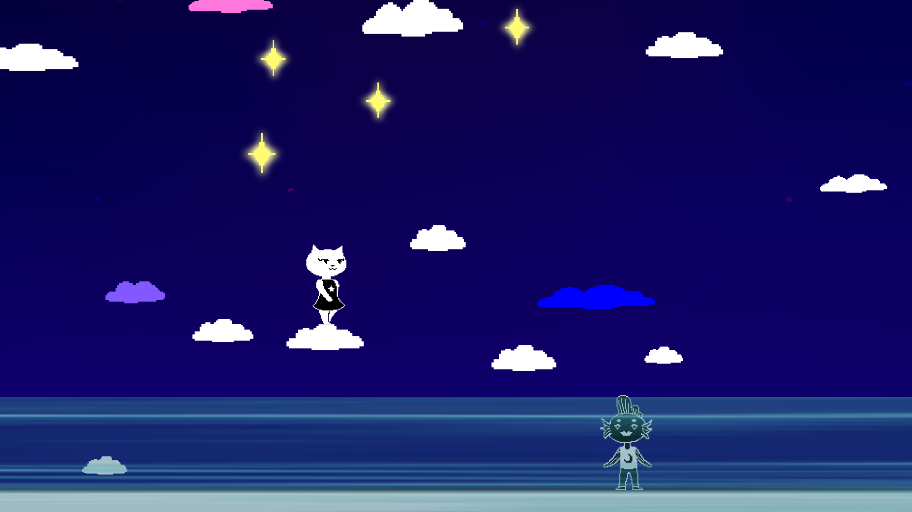
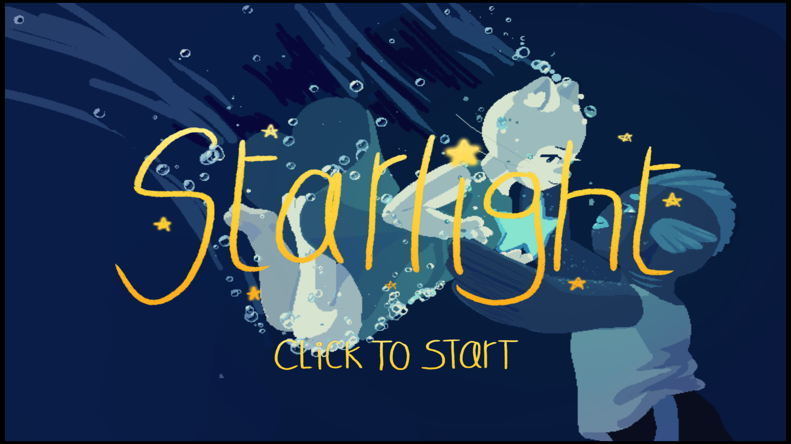
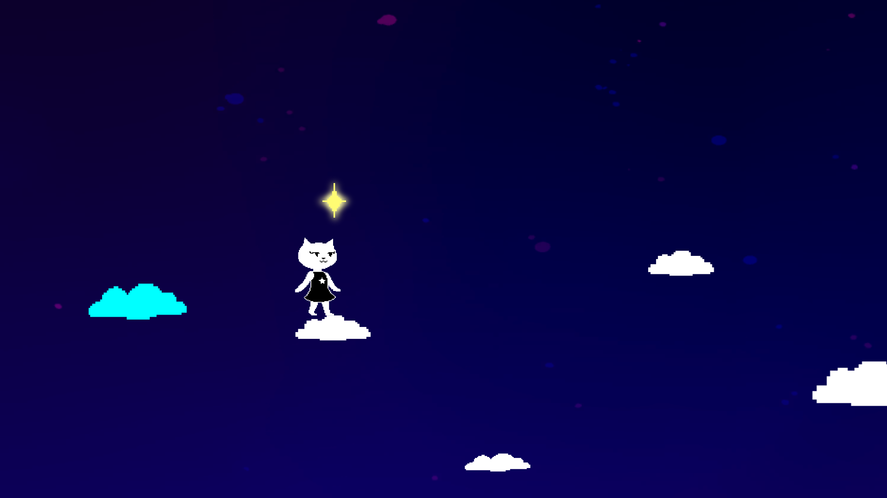

Spring 2019 - Music & Sound Effects
Overview
Starlight is about a cat trying to collect stars for her fish girlfriend,
who wants to experience the night sky. Jump on the clouds and collect all the stars to win!
Before Starlight, I had mostly created electronic music and a little
bit of orchestral music on my computer. I knew from the first meeting
that Starlight would have pixel art, so I used that along with the theme
of Love as a starting point for my music. I used the General MIDI
sound library that comes with Logic Pro X as a musical homage to
older games that had great music.
One of my favorite games as a child,
ToonTown Online, used
the GM soundfont - which made me all the more excited to use it
in a game of my own.
This is the second project that I completed with the Game Creation
Society at CMU. I met with other students every Sunday over
the course of a semester. A couple of the programmers
that were originally on the Starlight team had to leave halfway
through development, which meant that sometimes we only had artists attending
the meetings. In the end, we didn't end
up creating as much content for the game as we had originally hoped.
But it wasn't all for nothing because I developed my musical talents along the way :).
Feel free to check out Starlight on the
Game Creation Society website
too.
Screenshots



Title Screen - Exposition
Level Background - Searching Together
Level Complete - Love
Credits - Beyond